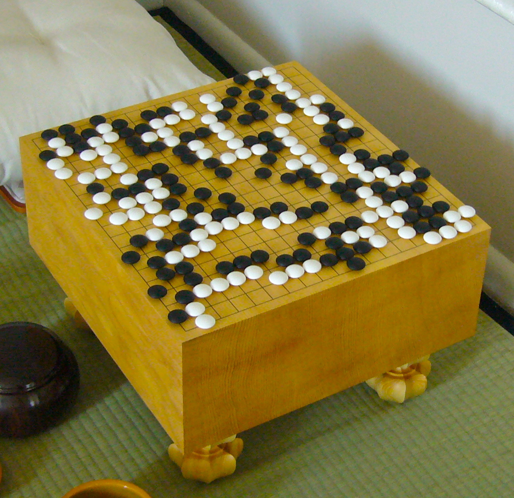
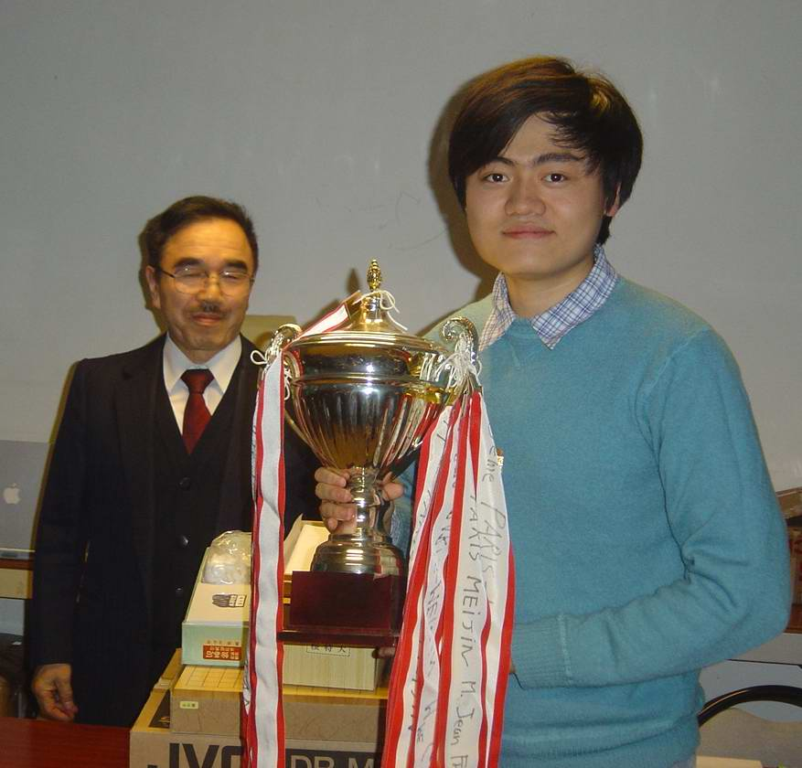
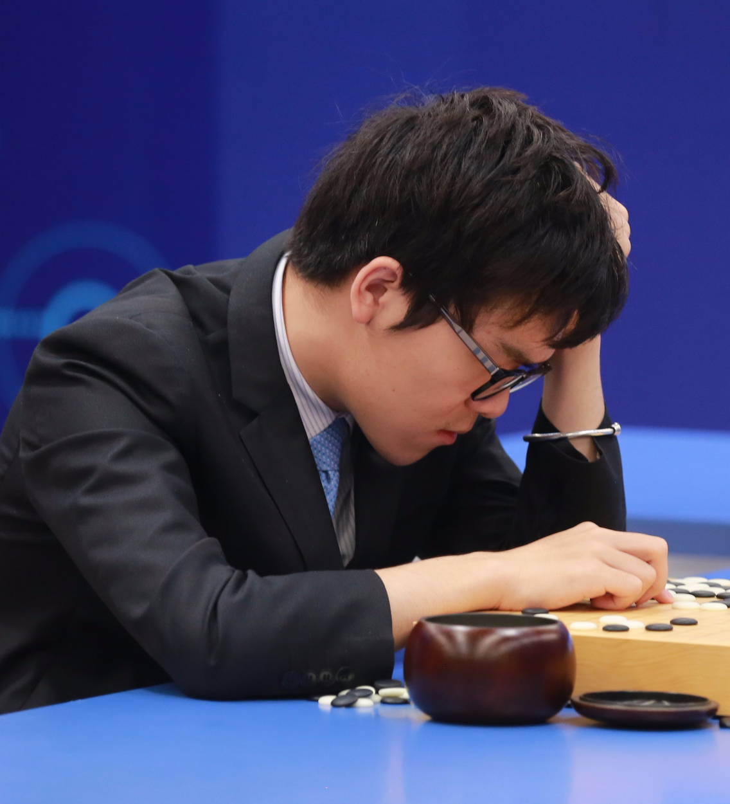
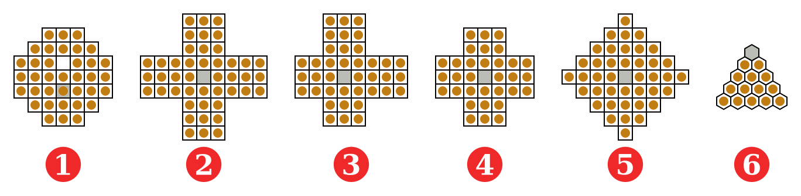
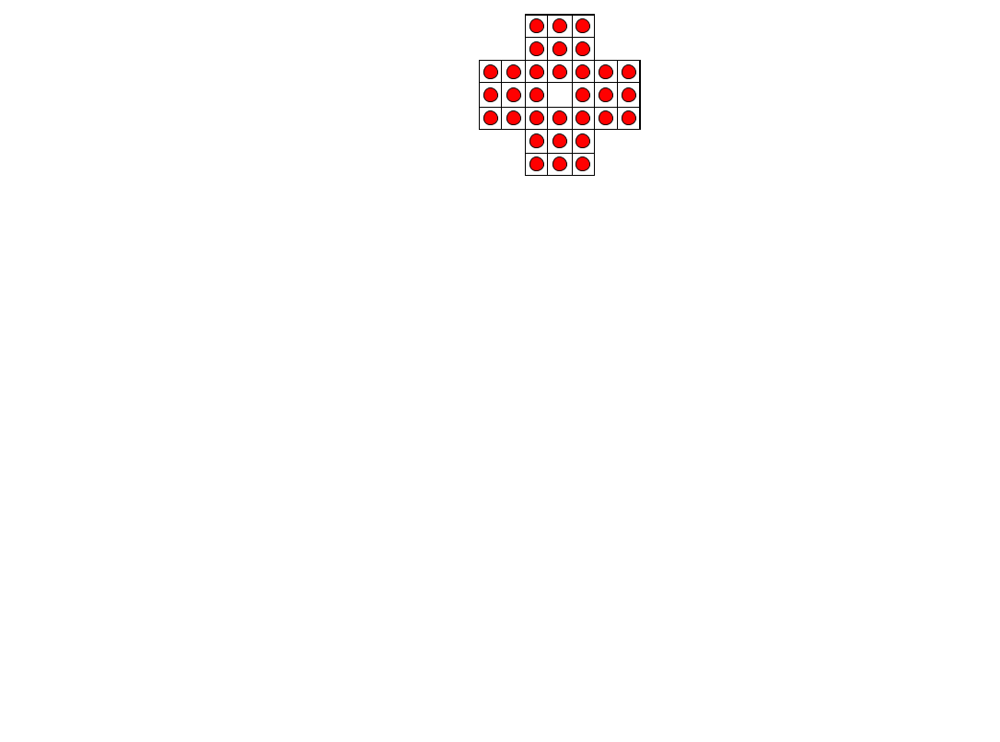
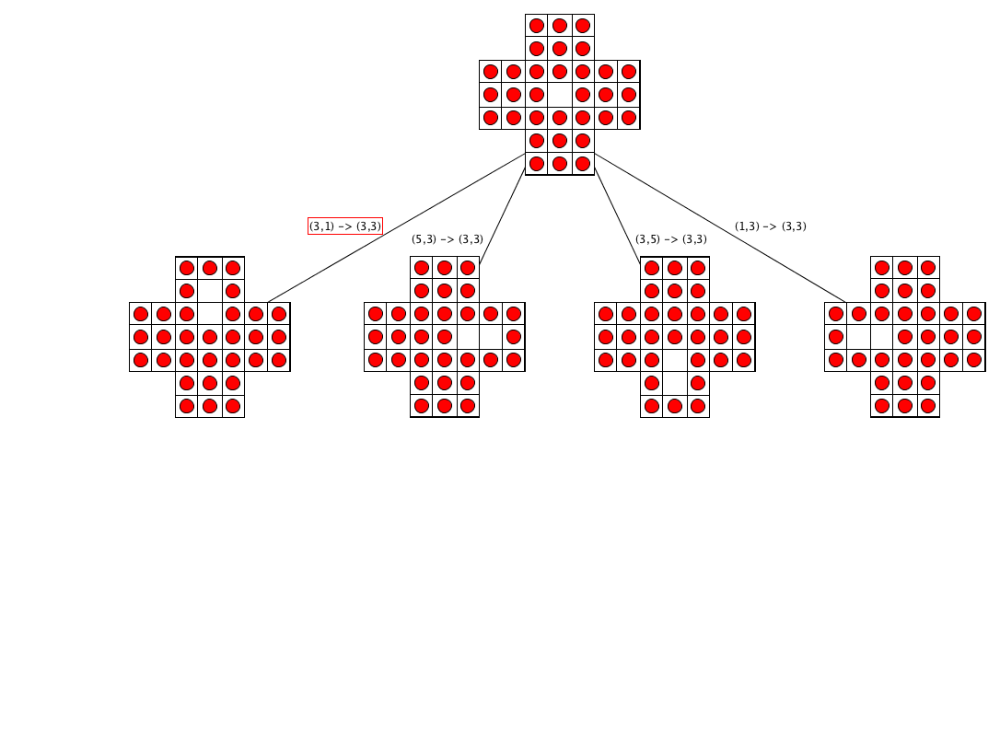
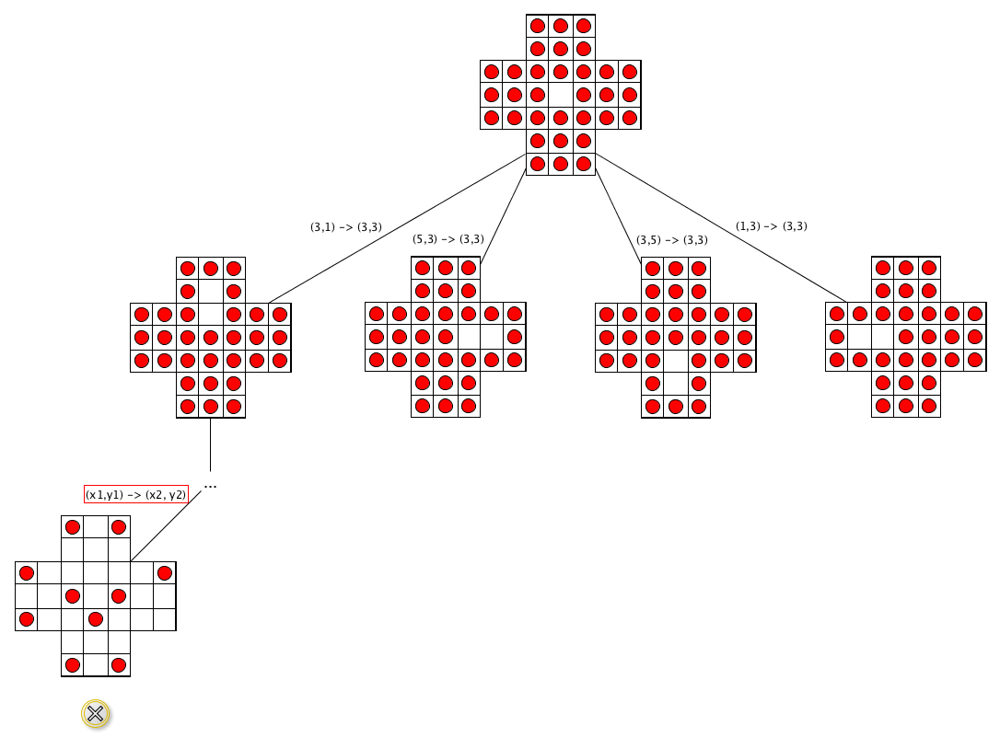
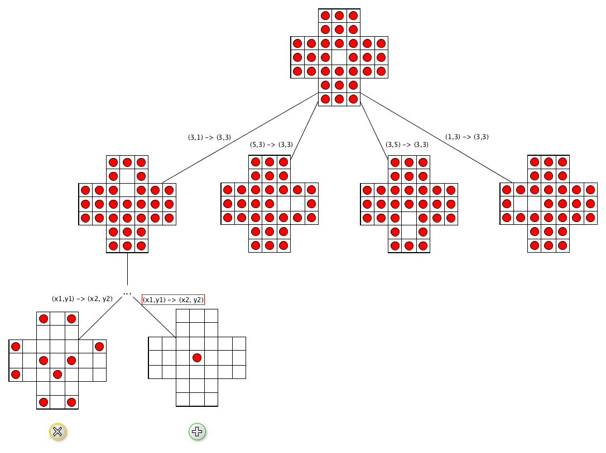
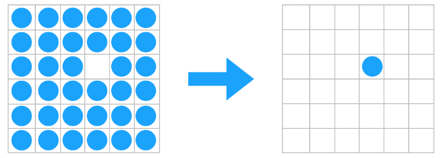

Communication 1
Monday 17 of December 2018: project presentation
Please do not miss it!
Lecture time: 11:30-13:30, we will start at 11:30 sharp
Communication 2
It is important to form and finalise all the groups of the project during this week
Once you have decided its composition, please communicate to me (by email) the name of the group (yes, each group must have a name) and its members
I have received just one group communication so far... Where are my drago... Ehm, where are the others?
Any question about the previous lecture?
Historic hero: AlphaGo
It is an artificial intelligence developed by Google DeepMind for playing to Go
Before 2015: several software have been developed to play to Go automatically, but all of them showed their limits when tested with human expert players of the game - in fact, no Go software was able to beat a human master
In 2015: Google declared to have developed the best artificial intelligence for playing to Go, and asked to test it in international matches against the strongest Go players
AlphaGo vs. Fan Hui
Match in October 2015, best of five games
Fan Hui was the champion of the European Go Championship in 2013, 2014 and 2015 (professional 2 dan player)
Result: 5 - 0
AlphaGo vs. Lee Sedol

Match in March 2016, best of five games
In 2016, Lee Sedol was ranked second in international titles (professional 9 dan player, max rank)
Result: 4 - 1
AlphaGo vs. Ke Jie
Match in May 2017, best of three games
In 2017, Ke Jie was ranked number one in the world (professional 9 dan player, max rank)
Result: 3 - 0
AlphaGo Zero vs. AlphaGo
Match in October 2017, best of one hundred games
AlphaGo Zero has been trained without using any existing human knowledge – i.e. the matches between human champions that have been archived in the past, that have been actually used for training AlphaGo
Result: 100 - 0
Backtracking
Algorithms for finding a solution to abstract strategy board games are based on a tree (node = possible move)
Backtracking algorithms find a solution by identifying possible candidates incrementally, and abandons partial candidates if they won't provide a solution
[leaf-win] if current node is a leaf and it is a solution then return it, otherwise
[leaf-lose] if current node is a leaf but it is not a solution, then return no solution back the parent node, otherwise
[recursive-step] apply recursively the whole approach for each child of the current node, until one of these recursive executions returns a solution - if no solution, back the parent node of the current one
Peg solitaire
It is a board game for one person only which involves the movement of some pegs on board containing holes

Starting situation: the entire board is filled up with pegs except the central position which is empty
Goal: whole board is full of holes except the central position which must contain a peg
Moves
Valid move: moving orthogonally a peg over an adjacent peg into a hole two position away, removing the jumped peg from the board
Computational problem: find a sequence of moves that allows one to solve the peg solitaire
Descriptive solution
[leaf-win] if last move brought to only one peg in the board in central position, then a solution has been found and return it, otherwise
[leaf-lose] if last move brought to a situation where no additional moves are possible, then recreate previous status of the board and return no solutions, otherwise
[recursive-step] apply recursively the algorithm for each possible valid move executable according to the current status of the board, until one of these recursive executions of the algorithm returns a solution – if none of them provide a solution, recreate the previous status of the board and return no solutions
Algorithm: execution

Algorithm: execution

Algorithm: execution
Algorithm: execution

Algorithm: execution

6x6 square board
This board is the smallest square board on which the complement problem can be solved
Complement problem: obtaining the complement of a given an initial configuration of a board by replacing every peg by a hole and vice versa

How to represent the board
(0,0) (1,0) (2,0) (3,0) (4,0) (5,0) (0,1) (1,1) (2,1) (3,1) (4,1) (5,1) (0,2) (1,2) (2,2) (3,2) (4,2) (5,2) (0,3) (1,3) (2,3) (3,3) (4,3) (5,3) (0,4) (1,4) (2,4) (3,4) (4,4) (5,4) (0,5) (1,5) (2,5) (3,5) (4,5) (5,5)
Two sets of tuples:
pegs: the list of the positions occupied by pegs - starting situation: all position but(3,2)holes: the list of the positions with no pegs - starting situation: only(3,2)
Ancillary functions
def valid_moves(pegs, holes): it returns a list of tree nodes, where each node represent a possible move that one can execute according to the current status of the board (defined by the two input sets pegs and holes)
def apply_move(node, pegs, holes): execute the move defined by the input node, and change the status of the board accordingly
def undo_move(node, pegs, holes): undo the move defined by the input node, and change the status of the board accordingly
The algorithm
def solve(pegs, holes, last_move=Node("start")):
result = None
if len(pegs) == 1 and (3, 2) in pegs: # leaf-win base case
result = last_move
else:
last_move.children = valid_moves(pegs, holes)
if len(last_move.children) == 0: # leaf-lose base case
undo_move(last_move, pegs, holes) # backtracking
else: # recursive step
possible_moves = deque(last_move.children)
while result is None and len(possible_moves) > 0:
current_move = possible_moves.pop()
apply_move(current_move, pegs, holes)
result = solve(pegs, holes, current_move)
if result is None:
undo_move(last_move, pegs, holes) # backtracking
return resultFirst execution:solve(initial_pegs, initial_holes)